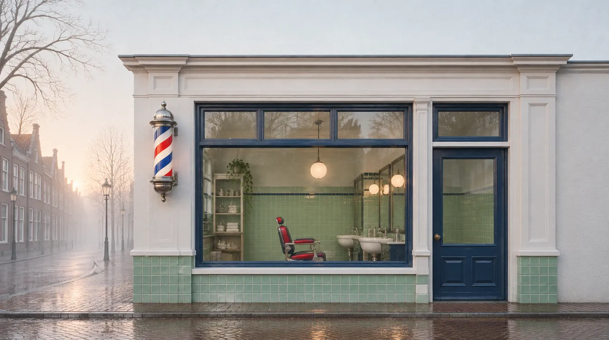
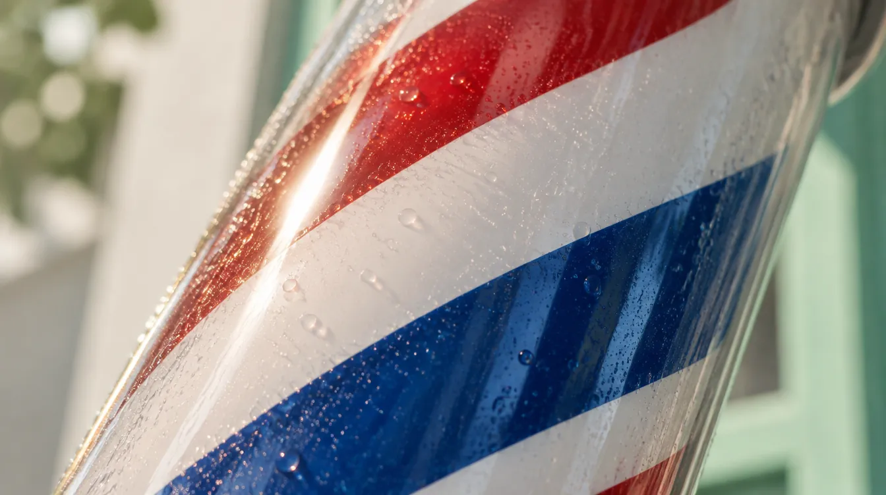
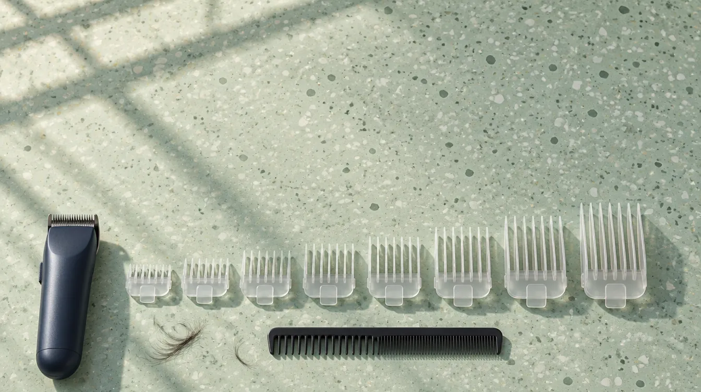
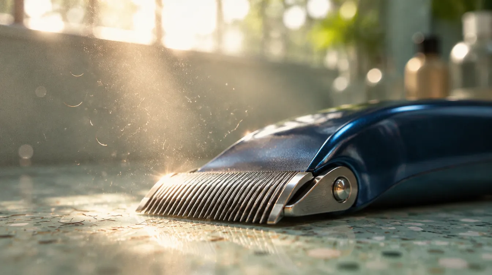
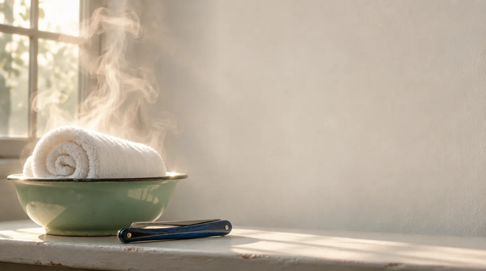
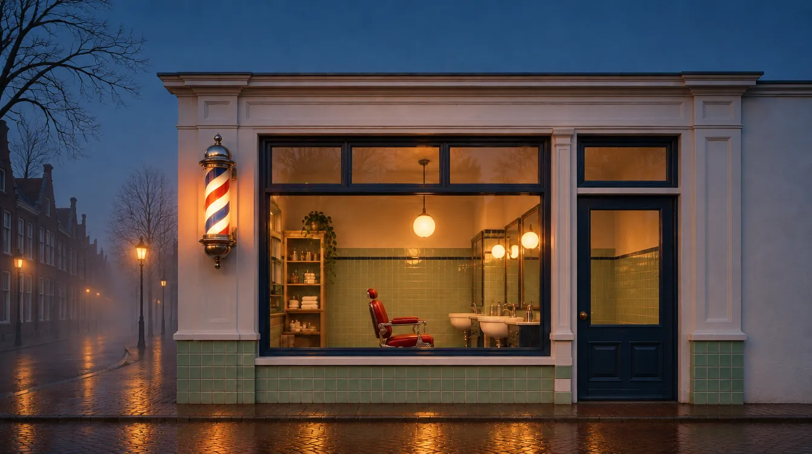
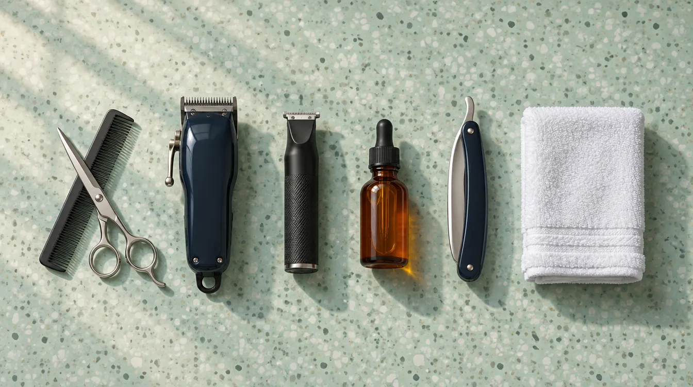

Barbershop Ferry zit aan de Stationsstraat 130 in Waalwijk. Je herkent een barbier al van ver aan de paal naast de deur. Binnen draait het om één ding: dat je strak en verzorgd weer naar buiten loopt.
Ferry · 02 / 09Het oudste uithangbord
De rood-wit-blauwe paal hangt al eeuwen bij barbiers. Hij draait, zodat je hem ziet vanaf de overkant van de straat. Een beter teken bestaat eigenlijk niet: hier wordt geknipt en geschoren.
Ferry · 03 / 09Even zitten
Bij de barbier hoef je even niets. Jas uit, cape om, achterover in de stoel. Vertel wat je wilt — korter, een fade, alleen de baard — en de rest gebeurt vanzelf.
Ferry · 04 / 09De fade, stap voor stap
Een fade is een overgang: onderaan heel kort, naar boven toe steeds langer. Dat doe je met opzetkammen van klein naar groot, en met geduld. Elke stap moet vloeiend in de volgende overlopen — dan zie je geen lijn meer, alleen een verloop.
Ferry · 05 / 09Lijnen die kloppen
Een goede knipbeurt valt op aan de details: de nek, de lijn boven het oor, de overgang naar de baard. Daarvoor heb je scherp gereedschap nodig en een vaste hand.
Ferry · 06 / 09Scheren zoals het hoort
Voor een scheerbeurt wordt de huid eerst warm en zacht gemaakt, met een warme handdoek. Zo glijdt het mes makkelijker en heeft je huid er minder last van. Daarna: scheerschuim, een scherp mes, rustig werken.
Ferry · 07 / 09Verzorging voor je baard
Na het trimmen of scheren hoort er verzorging bij. Een paar druppels baardolie maken het haar zacht en de huid eronder minder droog. Vraag gerust welke producten bij jouw baard passen.
Ferry · 08 / 09Jouw stoel staat klaar
Kies online een dienst en een tijd, of bel even — dan staat de stoel klaar als je binnenkomt.
Ferry · 01 / 09Sfeerbeeld00:00 / 00:28
Sfeerbeeld
scroll — de paal draait, de stoel staat klaar

Barbershop · Stationsstraat 130
strak geknipt aan de Stationsstraat.
Knippen, baard trimmen en scheren aan de Stationsstraat in Waalwijk. Plan je afspraak online, of bel even.
Een gewone ochtend aan de Stationsstraat. De paal draait al.
Barbershop Ferry zit aan de Stationsstraat 130 in Waalwijk. Je herkent een barbier al van ver aan de paal naast de deur. Binnen draait het om één ding: dat je strak en verzorgd weer naar buiten loopt.
Sfeerbeeld — niet de echte gevel

de paal draait.
Rood, wit, blauw: al eeuwen het teken van de barbier.
De rood-wit-blauwe paal hangt al eeuwen bij barbiers. Hij draait, zodat je hem ziet vanaf de overkant van de straat. Een beter teken bestaat eigenlijk niet: hier wordt geknipt en geschoren.
Sfeerbeeld
binnen is het rustig.
Mint tegels, daglicht, een rode stoel.
Bij de barbier hoef je even niets. Jas uit, cape om, achterover in de stoel. Vertel wat je wilt — korter, een fade, alleen de baard — en de rest gebeurt vanzelf.
Sfeerbeeld

van nul tot acht.
Opzetkam na opzetkam: zo ontstaat een fade.
Een fade is een overgang: onderaan heel kort, naar boven toe steeds langer. Dat doe je met opzetkammen van klein naar groot, en met geduld. Elke stap moet vloeiend in de volgende overlopen — dan zie je geen lijn meer, alleen een verloop.
Sfeerbeeld

strak langs de lijn.
Het mes van de tondeuse, scherp in het ochtendlicht.
Een goede knipbeurt valt op aan de details: de nek, de lijn boven het oor, de overgang naar de baard. Daarvoor heb je scherp gereedschap nodig en een vaste hand.
Sfeerbeeld

warm voor het mes.
Een warme handdoek maakt de huid zacht voor het scheren.
Voor een scheerbeurt wordt de huid eerst warm en zacht gemaakt, met een warme handdoek. Zo glijdt het mes makkelijker en heeft je huid er minder last van. Daarna: scheerschuim, een scherp mes, rustig werken.
Sfeerbeeld
een druppel voor de baard.
Olie maakt een baard zacht — en hij ruikt goed.
Na het trimmen of scheren hoort er verzorging bij. Een paar druppels baardolie maken het haar zacht en de huid eronder minder droog. Vraag gerust welke producten bij jouw baard passen.
Sfeerbeeld
en dan: jouw beurt.
De stoel staat klaar. Kies een tijd die je uitkomt.
Kies online een dienst en een tijd, of bel even — dan staat de stoel klaar als je binnenkomt.
Sfeerbeeld

Ferry · Waalwijk
tot zo aan de Stationsstraat.
Als het buiten donker wordt, brandt binnen nog het licht en draait de paal nog even door. Of je nu komt voor een fade, een baard die weer in model moet of een gladde scheerbeurt — bij Barbershop Ferry aan de Stationsstraat in Waalwijk ben je welkom.
Een afspraak maken hoeft niet ingewikkeld te zijn. Kies wat je wilt laten doen, kies een dag en een tijd, laat je naam en nummer achter. Liever even bellen? Dat kan natuurlijk ook: 06 28 71 89 27.
Ferry · 09 / 09SfeerbeeldSfeerbeeld — niet de echte gevel
Het vak
een barbier kijkt eerst.
Een goede knipbeurt begint niet met de tondeuse, maar met kijken. Hoe groeit je haar, waar zit de kruin, hoe draag je het normaal en wat zit je nu dwars? Wil je het kort aan de zijkant en langer bovenop, of juist overal even kort? Pas als dat duidelijk is, gaat de cape om.
Daarna is het handwerk. Een fade maak je in stappen, met opzetkammen van klein naar groot, tot de overgang zo vloeiend is dat je geen lijn meer ziet. Met de schaar komt de vorm bovenop, met de trimmer de strakke lijnen in de nek en langs het oor. Voor de baard hetzelfde: eerst de lengte, dan de lijnen, en een paar druppels olie om af te maken.
En dan is er de rust. Bij de barbier hoef je even niets. Je zit, er wordt voor je gezorgd, en je loopt naar buiten met haar dat weer helemaal klopt.
Op het werkblad — tik op een punt

Sfeerbeeld
Kam & schaar
Voor de bovenkant, de lengte en het bijwerken van de details.
Je vindt Barbershop Ferry aan de Stationsstraat 130 in Waalwijk. Kom je met de fiets of loop je even binnen? Plan dan vooraf je afspraak, dan staat de stoel klaar als je er bent.
Wil je weten wanneer je terecht kunt? Kies online een dag en tijd, of bel even.
 Sfeerbeeld
Sfeerbeeld